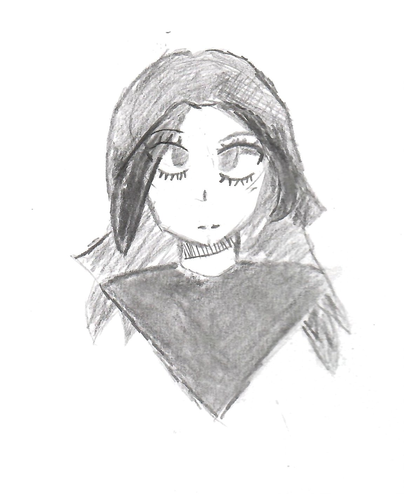

A collection of pixels in a specific sequence that i've made
i'll post all the stuff I make so I can look back on it later regardless of how presentable it is
Parasol Kirby model
Random Pencil sketch I did
Not the best, but its my first attempt at a different hair style. I need to get better at lining up the eyes and making them symmetrical
Random thing I modeled in Blockbench. I don't even know what to call it...
I kinda like this one.. I should've had more happening though... perhaps I can model a Character and have it posed there?
Thats all there is, there isn't any more.